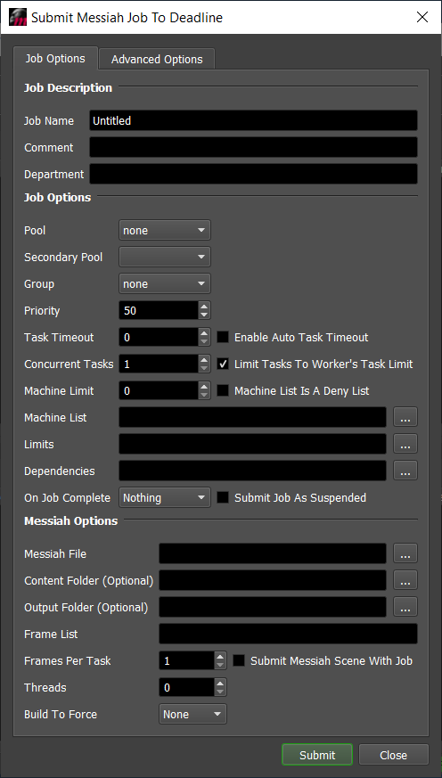
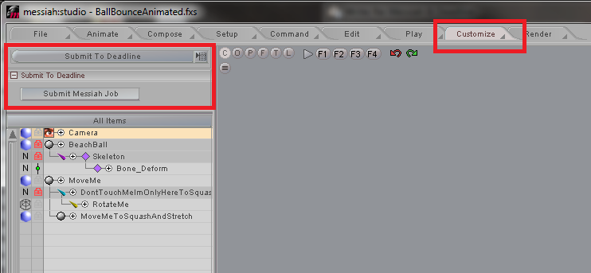

Messiah¶
Plugin Installation¶
The Messiah plugin is no longer included in new installations of Deadline by default, but it is still supported.
The following steps will lead you through the process of downloading and configuring the Messiah plugin to work just as it does in previous versions of Deadline.
Note
Messiah is only supported on Windows operating systems.
Download the Plugin Package¶
Before you begin, make sure the Deadline Monitor is not running.
All the files required for using Messiah with Deadline are available on our downloads site as a zip archive.
Click the ‘Plugins’ link at the bottom of the Downloads site.
Find the archive file under the ‘Messiah’ heading on the plugins download page and download it.
Extract the archive file you just downloaded.
- Copy the Messiah files to their appropriate locations in your Deadline Repository installation:
Copy the
Messiahfolder from[Extracted Messiah Archive]/pluginsto[Deadline Repository]/pluginsCopy the
Messiahfolder from[Extracted Messiah Archive]/submissionto[Deadline Repository]/submissionCopy the
MessiahSubmission.pyfile from[Extracted Messiah Archive]/scripts/Submissionto[Deadline Repository]/scripts/Submission
You can now submit Messiah jobs through the Deadline UI by navigating to
Submit > 3D > Messiahin the Deadline Monitor.
If you would like to further configure the Messiah plugin or install the integrated Deadline submitter, you are now set up to follow the guides below:
Job Submission¶
You can submit jobs from within Messiah by installing the integrated submission plugin, or you can submit them from the Monitor. The instructions for installing the integrated submission script can be found further down this page.
To submit from within Messiah, select the Customize tab, and then from the drop down, select Submit To Deadline. Click the Submit Messiah Job button to launch the submitter.
Submission Options¶
The general Deadline options are explained in the Job Submission documentation, and the Draft/Integration options are explained in the Draft and Integration documentation. The Messiah specific options are:
Messiah File: The scene file to render.
Content Folder: This is the folder that contains the Messiah scene assets. It is recommended that you have a network accessible content folder when network rendering with Messiah.
Output Folder: The folder where the output files will be saved (including images from all enabled buffers). If left blank, the output folders in the scene file will be used.
Threads: The number of threads to use for rendering.
Build To Force: The build of Messiah to force.
Frame Resolution: Override the width and height of the output images. If a value is set to 0, the value from the scene file will be respected.
Antialiasing: Override the antialiasing settings in the scene file.
Plugin Configuration¶
You can configure the Messiah plugin settings from the Monitor. While in power user mode, select Tools -> Configure Plugins and select the Messiah plugin from the list on the left.
Note
If you do not see ‘Messiah’ in the plugins list, then you will need to install the plugin before completing the following steps. Consult the Messiah Plugin Installation guide to install the Messiah plugin on Deadline.
Messiah Settings
Messiah Host Library: The path to the messiahHOST.dll library. Enter alternative paths on separate lines.
Integrated Submission Script Setup¶
The following procedures describe how to install the integrated Messiah submission plugin. This plugin allows for submitting Messiah render jobs to Deadline directly from within the Messiah editing GUI. Note that this has only been tested with Messiah version 5.
You can either run the Submitter installer or manually install the submission script.
Note
If you cannot find the [Repository]/submission/Messiah directory when following the steps below, then you will need to install the Messiah plugin first. Consult the Messiah Plugin Installation guide to install the Messiah plugin on Deadline before attempting to install the integrated submitter in Messiah.
Submitter Installer¶
Run the Submitter Installer located at
<Repository>/submission/Messiah/Installers.
Manual Installation¶
Messiah 32 Bit
Copy the file:
[Repository]\submission\Messiah\Client\DeadlineMessiahClient32.mp to [Messiah 32 Bit Install Directory]\Plugins
Messiah 64 Bit
Copy the file:
[Repository]\submission\Messiah\Client\DeadlineMessiahClient64.mp to [Messiah 64 Bit Install Directory]\Plugins
Verify Installation¶
Restart Messiah.
You will find the Submit To Deadline option in the drop down under the Customize tab.
Error Messages and Meanings¶
This is a collection of known Messiah error messages and their meanings, as well as possible solutions. We want to keep this list as up to date as possible, so if you run into an error message that isn’t listed here, please visit the Thinkbox Help Centre and let us know.
Currently, no error messages have been reported for this plugin.

{kind=link}
{kind=link}
{kind=link}